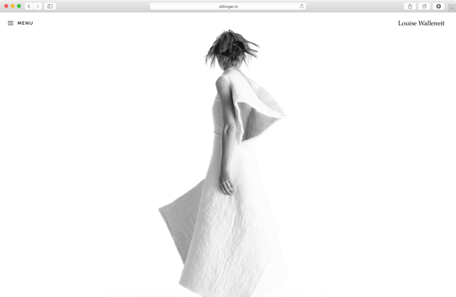

Birthday Suits
Birthday Suits is a the fashion collection of artist and fashion designer Louise Walleneit.
View Case Study

Case Study of
A Open Source Markdown Editor
Dillinger.io is a side-project of Joe McCann, Cofounder/CEO of nodesource and a Node.js developer from New York. He built Dillinger.io in the need of a decent markdown editor with a live preview. Today, it has over 50.000 page views the month and over 3.000 stars on GitHub.
Frontend Development, User Interface Design, User Experience Design, Art Direction, Mobile Web Development, Prototyping.
I’ve began by studying the shortcomings of the existing site and writing down what could be improved, removed or changed. After I had an impression, I continued with some research and brainstorming, finding out how other competitors compare, follwed by creating rough sketches of my first ideas. When I think I’ve got a good sketch, I improved upon that and created wireframes for a more detailed impression.
It was important for me to involve the client as much as possible in the project, discussing the design and progress. For that, I've used LayerVault, a collaboration and versioning platform for Designers.
I started to design the mobile screens first and choosing a mild/elegant theme for a nice subtle contrast. When the design part was finished, I created some quick prototypes with InVision really fast. It was a great helper to get a feeling on how the app works and feels like. And in addition to that, my client was more than happy to interact with something.
Awesome!
Dillinger uses EJS for it’s templating part, which I’ve never used before. However, experience with other templating engines like handlebars/mustache helped me there and I familiarized myself with it in a matter of minutes.
I’ve removed all hard-coded stuff and exchanged them with dynamic functions, wrote a new versatile build handler for production, speeded up the development process with Gulp & Webpack and added the required Bootstrap Library.
Launch Project or Back to Overview
This Project is currently in Review.
Check back soon!
Birthday Suits is a the fashion collection of artist and fashion designer Louise Walleneit.
View Case Study